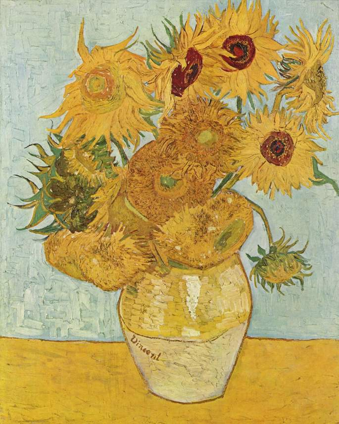
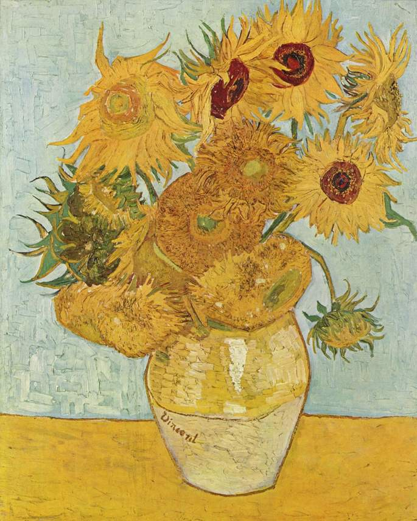

A pintura está na minha pele.” Era assim que Vincent William van Gogh, um dos maiores pintores do século 19, referia-se a sua paixão
O pintor Van Gogh nasceu na Holanda em 30 de Março de 1853 e faleceu aos 37 anos, na França em julho de 1890.
Depois de estudar brevemente na Academia antuérpia, em 1886 ele saiu para se juntar a seu irmão Theo, um negociante de arte, em Paris. Lá ele conheceu Henri de Toulouse-Lautrec, Paul Gauguin, e outros envolvidos no impressionismo e pós-impressionismo.
No verão de 1887 ele estava pintando em cores puras e usando pinceladas quebradas que às vezes era pointillistic, e no início de 1888 seu estilo pós-impressionista tinha cristalizado.
Ele deixou Paris em fevereiro de 1888 para Arles, no sudeste da França. As imagens que ele criou ao longo dos 12 meses seguintes — retratando árvores frutíferas florescendo, vistas da cidade e dos arredores, autorretratos, retratos de Roulin, o carteiro e outros amigos, interiores e exteriores da casa, girassóis e paisagens — marcaram seu primeiro grande período. Gauguin chegou em outubro de 1888, e por dois meses ele e Van Gogh trabalharam juntos; mas, enquanto cada um influenciou o outro até certo ponto, suas relações rapidamente se deterioraram. Na véspera de Natal de 1888, fisicamente e emocionalmente exausto, van Gogh surtou sob a tensão; depois de discutir com Gauguin, ele cortou a metade inferior de sua própria orelha esquerda.
No final de abril de 1889, van Gogh entrou em um asilo, mas continuou a pintar; durante seus 12 meses de estadia, ele completou 150 pinturas e desenhos.Uma mudança para Auvers-sur-Oise em 1890 foi seguida por outra explosão de atividade, mas ele logo sofreu uma recaída e morreu em julho de um ferimento de bala auto-infligido.
Sua carreira artística de 10 anos produziu mais de 800 pinturas e 700 desenhos, dos quais vendeu apenas um em sua vida,"O Vinhedo vermelho"
Van Gogh foi um misto de loucura, sentimentalismo e criatividade. Tinha o dom de pintar, mas não sabia lidar com questões existenciais e materiais, nem tão pouco com relacionamentos afetivos. Na arte encontrava refúgio para seu sofrimento mas, nem só de arte vive o homem, e suas carências e necessidades não estavam sendo preenchidas, o que o levou ao desequilíbrio generalizado (mente, corpo e emoção). Ironicamente, os quadros que pintou durante a sua existência pobre e mal-sucedida, após sua morte, passaram a valer uma fortuna.
Atualmente, Vincent Van Gogh é considerado um grande artista da pintura, seus quadros estão entre os mais caros do mundo.
Mesmo com sua existência trágica e inglória, recordemos de Van Gogh através de duas frases, pronunciadas por ele, que resumem sua essência artística e sua natureza sensível:
“Penso que não há nada mais artístico do que amar, verdadeiramente, as pessoas”.
“Eu sonho a minha pintura e, então, eu pinto o meu sonho”.
 
